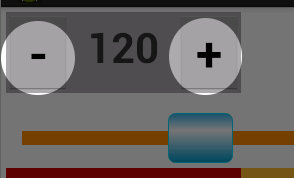
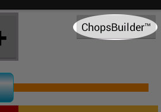
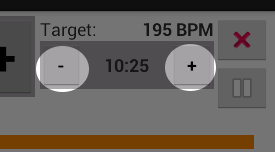
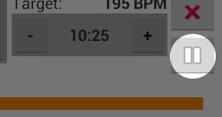
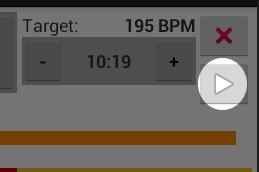
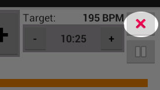

Safe Metronome
Safe Metronome
Safe Metronome
Safe MetronomeThank you for choosing Safe Metronome with ChopsBuilder™. This document explains everything you need to know to make Safe Metronome part of your musical practice regimen.
To start the metronome beat, press the green Start Button:
To stop the metronome beat, press the red Stop Button:

Under certain circumstances, Safe Metronome will start or stop automatically. The beat will start if you set the tempo by tapping, or if you start or un-pause the ChopsBuilder™ feature.
The beat will stop if you navigate away from the app, turn off your screen or rotate the device.
There are three ways to adjust the tempo to your desired speed:
You can set the metronome tempo by tapping the yellow "TAP" button.
Tap the button only twice at your desired tempo. The first tap will turn the button blue to indicate it is waiting for the second tap. If the process times out, then the button will turn back to yellow.
You can adjust the tempo by moving the slider to your desired speed.
When in landscape mode, the speed will increase the further to the right you move the slider. In portrait mode, the speed will increase the lower you move the slider.
You can use the "+" and "-" buttons on either side of the numeric tempo indicator to increment and decrement the tempo.

Pressing either button once will change the tempo by one beat-per-minute (BPM). You can also hold these buttons down, and the tempo will change until you release the button.
You can set and adjust the tempo whether or not the metronome is beating.
Safe Metronome comes with two different sounds you can choose to mark time. To access the sound chooser dialog, select the "Beat Sound" option from the menu.
ChopsBuilder™ is a powerful feature that gradually increases the tempo while you practice. This section describes both how to activate ChopsBuilder™, as well as how to adjust it while it is active.
To use ChopsBuilder™, you need to do three things:
Begin using the ChopsBuilder™ feature by adjusting the metronome to your desired target tempo. The target tempo is the speed at which you wish to be able to play a particular piece or passage. It is probably faster than you are able to play it, since improving your ability is the primary purpose of ChopsBuilder™.
For details on how to set the tempo, see the section above on setting the metronome tempo.
If you are working from sheet music, you might choose your target tempo according to the tempo marking indicated on the score.
Once the tempo is at the speed you want, press the ChopsBuilder™ button in the upper-right corner of the screen.

Pressing the ChopsBuilder™ button brings up the "Countdown" dialog, and you are ready to proceed to the next step.
The amount of time remaining before ChopsBuilder™ reaches your target tempo is called the countdown. When you press the ChopsBuilder™ button, you will see a dialog where you set the countdown time in minutes. The countdown can be as long as 59 minutes, or as brief as one minute.
Once you have selected your countdown time, press the "Next" button, and you are ready for the final step in activating ChopsBuilder™.
The last thing to do in activating ChopsBuilder™ is to choose your starting tempo. You can do this either by adjusting the numeral indicator and pressing the "Start" button, or by tapping the tap button. The tap button in this dialog works the same as the tap button on the main display. For details on using the tap button, see the section on setting the tempo by tapping.
Once ChopsBuilder™ is running, you can adjust its operation in several ways:
While ChopsBuilder™ is active, you can still adjust the tempo of the metronome beat. If ChopsBuilder™ is running, the tempo will continue to approach the target tempo during the countdown time. If ChopsBuilder™ is paused, then the tempo will remain constant where you set it until ChopsBuilder™ is unpaused.
While ChopsBuilder™ is active, you can adjust the countdown time by pressing the "+" and "-" buttons on either side of the countdown indicator.

Each press of a button will increase or decrease the countdown time by one minute.
While ChopsBuilder™ is active, you can pause the progress toward the target tempo by pressing the pause button.

While paused, the tempo and countdown time will not change, and the pause button will be replaced by a start button. Pressing the start button will unpause ChopsBuilder™ and the tempo will start moving toward the target tempo.

You can also stop the metronome while ChopsBuilder™ is active. In this case, the metronome will stop beating and the countdown will stop, but ChopsBuilder™ will remember its target tempo and countdown time. When you restart the metronome, ChopsBuilder™ will be active, and the tempo will be changing toward the target tempo.
You can cancel ChopsBuilder™ by pressing the cancel button.

When you cancel ChopsBuilder™, the metronome tempo will stop changing. Your target tempo and countdown times will be lost.
We wish that Safe Metronome were perfect, but we know it's not. Your feedback is important to fixing problems and making improvements. If you want to send us a bug report, a feature request or any other feedback, please reach us by email: